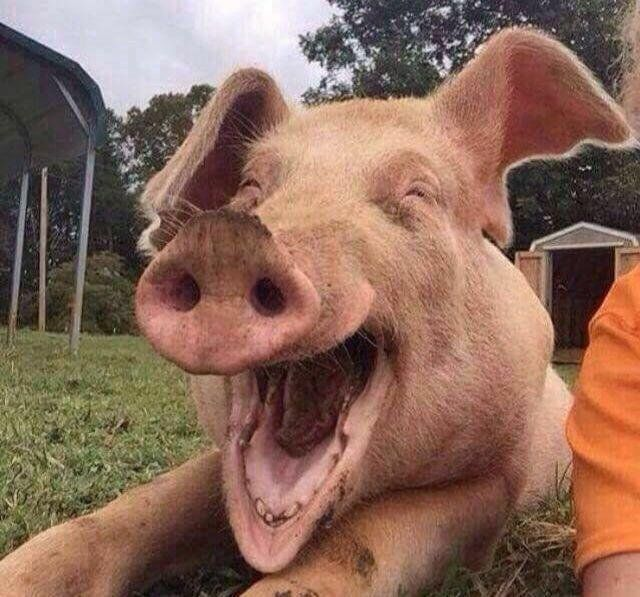

Sistema Suino Cultura
Na próspera região rural de Pato Branco ergue-se orgulhosamente a Suinofazenda Pioneira. Fundada há mais de duas décadas pelo visionário agrônomo, Sr. João Silva, a empresa é um símbolo de excelência na suinocultura, destacando-se por práticas inovadoras e compromisso inabalável com a qualidade.
Nossa missão é: "Investir continuamente em pesquisa e desenvolvimento, colaborando com especialistas do setor para aprimorar constantemente suas práticas. A Suinofazenda Pioneira também mantém parcerias sólidas com instituições acadêmicas e órgãos governamentais, contribuindo para o avanço da suinocultura no Brasil.".
Em uma extensa área verdejante, a Suinofazenda Pioneira abraça uma abordagem sustentável, utilizando tecnologias de ponta para garantir o bem-estar dos suínos e preservação ambiental. Os porcos são criados em condições ideais, recebendo cuidados especializados desde a fase de creche até a maturidade, resultando em carne suína de altíssima qualidade.
Nosso estabelecimento
Nosso estabelecimento está localizado perto da área rural